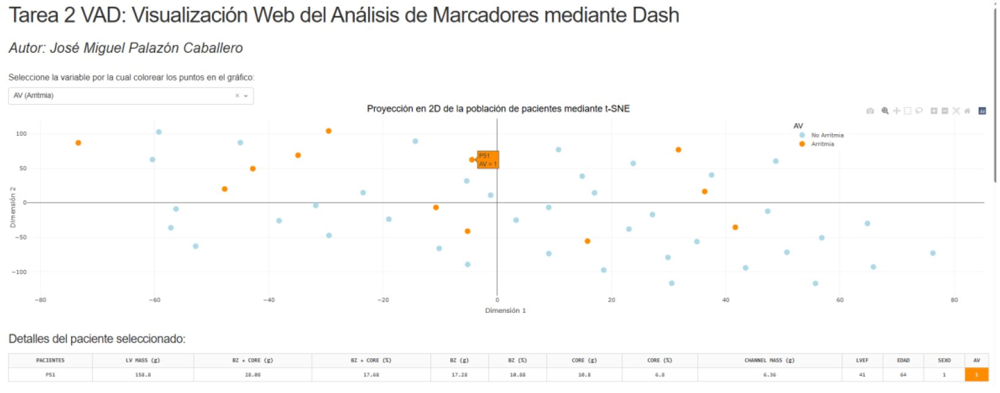
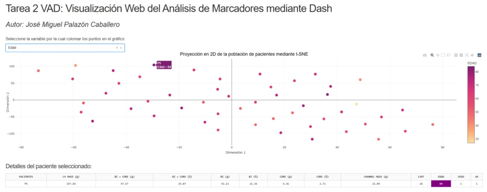
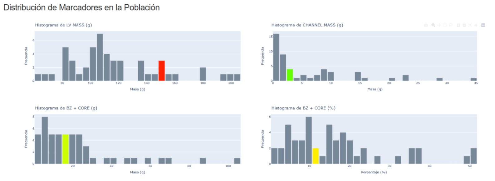

Casos Prácticos IVIRMA Global
Data Business Analyst
Respuestas a las cuatro cuestiones técnicas planteadas.
Integración de una nueva empresa en la base de datos
La dificultad en la integración radica en alinear dos modelos de negocio esencialmente diferentes aspirando a preservar cierta consistencia para el reporting corporativo. En sanidad esto suma una capa adicional: RGPD reforzado para datos de categoría especial, además de restricciones en las transferencias de datos internacionales si la entidad entrante opera fuera del Espacio Económico Europeo (IVIRMA tiene fuerte presencia en EEUU por lo que es especialmente relevante).
Por tanto, planteo la integración en cinco fases; importante destacar que las duraciones son rangos con supuestos explícitos pero altamente flexibles dependiendo del proyecto.
Distribución temporal estimada. La Fase 3 corre en paralelo a la 2; total agregado 8–14 semanas según limpieza de la fuente y volumen de datos.
Fase 0: Discovery (1-2 semanas)
Reuniones con el equipo de la entidad entrante para entender:
- Qué fuentes hay y sobre qué tecnología corren. Esto es clave: en mi experiencia en Shift Technology, el pipeline estaba en C# con ejecuciones diarias de ~2h de duración sobre batches, una arquitectura particular que puede diferir enormemente de la usada en IVIRMA. Cada empresa tiene su realidad técnica y el discovery sirve precisamente para no proyectar suposiciones.
- Volumen actual y profundidad histórica.
- Qué datos son imprescindibles, cuáles deseables y cuáles prescindibles, argumentando cada decisión con negocio.
- Restricciones regulatorias específicas del sector y de la jurisdicción.
- En mi experiencia suele ser preferible pedir un subset representativo para validación temprana, antes de tener el pipeline completo.
Fase 1: Diseño de la integración (1-2 semanas)
Tres decisiones a cerrar antes de tocar código:
- Mapeo de origen a modelo interno corporativo, nunca al revés. El modelo interno es el source of truth y la fuente entrante se adapta. Es lo que vi aplicar en Shift y considero que es el patrón correcto: evita que cada nueva integración degrade el modelo común.
- Estrategia de identificadores y entity resolution: cómo se tratan pacientes, profesionales o clínicas que puedan existir ya en el modelo central (lo desarrollo en la pregunta 2).
- Arquitectura del pipeline: capa raw / staging / modelo de negocio; una arquitectura medallion (bronze / silver / gold) encaja bien aquí, semejante a la empleada en mis últimas prácticas.
Fase 2: Desarrollo del pipeline de mapeo (4-8 semanas)
Esta es, en mi experiencia, la fase más larga. En Shift vi que el mapeo a modelo interno y la creación de reglas y escenarios específicos de la línea de negocio (en su caso para detección de fraude en siniestros) era el grueso del trabajo, equivalente a 1-3 meses de un Data Scientist a tiempo completo. La ingestión es relativamente estándar; lo costoso es el alineamiento semántico.
Sub-tareas:
- Ingestión (batches o stream).
- Transformaciones de mapeo en staging.
- Tests de calidad por capa.
- Documentación viva del mapeo: un campo no documentado es deuda futura el día que la persona que lo escribió ya no esté.
Fase 3: Harmonización semántica y entity resolution (paralelo a Fase 2, 2-3 semanas)
Catálogos comunes (tipos de tratamiento, especialidades, unidades), unificación de divisas y zonas horarias, y resolución de duplicados en entidades. En sanidad, un falso positivo en pacientes es crítico ya se mezclarían historiales clínicos, así que el umbral debe ser conservador y siempre con revisión humana en los casos dudosos.
Fase 4: Periodo de prueba y validación (2-3 semanas)
Ejecución del pipeline contra datos reales con monitorización activa: volumen y tasas de fallo. Reconciliación de los KPIs corporativos contra los reportes que la empresa entrante ya producía; si un KPI sale distinto, hay que entender por qué antes de dar nada por bueno (¿definición distinta?, ¿error de mapeo?, ¿error original suyo?...). Autorización explícita de los stakeholders antes del cambio definitivo.
Estimación global
Dependiendo de la limpieza de la fuente, el volumen y la madurez del equipo entrante. El mayor riesgo no suele ser técnico sino de alineamiento semántico y validación con negocio: por eso reservo una proporción significativa del tiempo a las fases 0, 3 y 4.
Bases de datos inconsistentes y datos sucios
Sí, en los dos contextos profesionales en los que he trabajado con datos a escala. Comparto el caso más interesante y luego un complemento más breve.
Caso principal: reconstrucción de entidades en Shift Technology
Contexto
Shift trabaja con datos de aseguradoras de varios países (en el equipo en el que estuve, cuatro aseguradoras de motor en LATAM y una de viajes a nivel europeo). Una de las dificultades recurrentes era que una misma persona física aparecía como entidades distintas en los datos: distintas pólizas, distintas escrituras del nombre, errores de transcripción, falta de DNI en algunos casos, o miembros de la misma familia compartiendo domicilio. Sin resolver esto, el análisis posterior (especialmente la detección de fraude) pierde mucho valor: dos pólizas que parecen independientes pueden ser de la misma persona, y la red de relaciones queda invisibilizada.
Diagnóstico
El problema no era tanto "datos sucios" en sentido clásico (campos mal tipados o nulos), sino un problema clásico de entity resolution: cómo decidir cuándo dos registros que no son idénticos representan a la misma entidad real.
Estrategia
El equipo aplicaba un enfoque combinado:
- Reglas determinísticas sobre combinaciones de campos: mismo domicilio + mismo primer nombre, mismo domicilio + mismo teléfono, etc.
- Comparación fonética del nombre mediante una librería de C# desarrollada internamente. Esto resolvía el caso de variantes ortográficas y errores de transcripción (María / Maria, González / Gonzales...) que un string match exacto no captura.
- Revisión manual en casos dudosos cuando la confianza no era suficiente para fusionar automáticamente.
El punto principal es la asimetría de los errores: un falso positivo (fusionar dos personas distintas en una sola) suele ser peor que un falso negativo (no detectar un duplicado), porque corromper datos consolidados es difícil de revertir.
Beneficios
Una visión unificada del cliente que permite construir el grafo real de relaciones entre pólizas, siniestros y personas, base sobre la que después se construyen los escenarios de detección de fraude.
Considero que este problema es directamente trasladable a la línea de negocio de IVIRMA: un grupo internacional con clínicas en varios países y con pacientes que pueden aparecer en sistemas distintos tras una integración (Pregunta 1) tiene exactamente el mismo reto. La diferencia es que en sanidad la asimetría es aún más fuerte: un falso positivo significaría mezclar historiales clínicos de dos personas distintas. El criterio de umbral conservador y revisión humana se aplica con más razón.
Caso secundario: parsing de direcciones libres en NTT Data
En el proyecto con WIPO (agencia de la ONU encargada de la propiedad intelectual) trabajamos con direcciones de clientes introducidas como texto libre. Para obtener distribución geográfica de clientes en EE. UU. necesitábamos extraer el estado, pero cada registro venía con un formato distinto.
La solución combinaba varias técnicas:
- Regex para detectar códigos postales, con cuidado: en zonas como Los Ángeles algunos números de portal tienen el mismo número de cifras que un ZIP, así que el patrón por sí solo no era suficiente.
- Librerías de Python para detección de ciudades estadounidenses sobre el texto.
- Búsqueda directa de estados (nombre completo o abreviatura), pero validando contra el ZIP detectado, porque hay ciudades que comparten nombre con estados de otros estados.
Lección general
Cuando los datos vienen como texto libre, ninguna heurística aislada funciona: lo que funciona es combinar varias señales y usar unas para validar otras.
Sentencia SQL multi-tabla
Modelo de datos ficticio
Diseño un esquema en estrella simple, orientado al tipo de reporting que se haría sobre la actividad asistencial de un grupo como IVIRMA. Cuatro tablas: tres dimensiones y una de hechos.
dim_paciente
id_paciente(PK)nombre_completoedadnacionalidadfecha_alta
dim_clinica
id_clinica(PK)nombrepaisciudad
dim_tratamiento
id_tratamiento(PK)tipodescripcion
fact_tratamiento_realizado
id_registro(PK)id_paciente(FK)id_clinica(FK)id_tratamiento(FK)fecha_iniciofecha_finresultado(exitoso, no_exitoso, cancelado)coste
La granularidad de la tabla de hechos es un tratamiento completo realizado. En la realidad existen subdivisiones más finas (ciclos, intentos), que se modelarían con tablas adicionales según las necesidades de reporting; para el ejemplo simplifico a tratamiento como unidad.
Pregunta de negocio
He escogido esta pregunta ya que me parece plausible en el rol de Data Business Analyst (agrega actividad asistencial, segmenta por dos dimensiones de negocio y filtra ruido estadístico de combinaciones con poca muestra).
Query
SELECT
t.tipo AS tipo_tratamiento,
c.pais AS pais_clinica,
COUNT(*) AS num_tratamientos,
SUM(CASE WHEN f.resultado = 'exitoso' THEN 1 ELSE 0 END) AS num_exitos,
ROUND(
SUM(CASE WHEN f.resultado = 'exitoso' THEN 1.0 ELSE 0 END) / COUNT(*),
3
) AS tasa_exito
FROM fact_tratamiento_realizado f
INNER JOIN dim_tratamiento t ON f.id_tratamiento = t.id_tratamiento
INNER JOIN dim_clinica c ON f.id_clinica = c.id_clinica
WHERE f.fecha_inicio >= DATEADD(month, -12, CURRENT_DATE)
AND f.resultado IN ('exitoso', 'no_exitoso') -- excluyo cancelados del denominador
GROUP BY t.tipo, c.pais
HAVING COUNT(*) >= 30
ORDER BY tipo_tratamiento, tasa_exito DESC;Explicación de los joins y decisiones
Por qué INNER JOIN y no LEFT JOIN:
Aquí me interesa solo la actividad realmente registrada y completamente
identificada, ya que un tratamiento sin clínica o sin tipo asociado es un
dato corrupto, no un caso a contabilizar. Si la pregunta fuese
"lista todas las clínicas, incluso las que no han hecho tratamientos",
entonces partiría desde dim_clinica con un LEFT JOIN.
Filtro de fecha en WHERE, filtro de muestra en
HAVING: Es una distinción clásica que no siempre se
entiende: el WHERE filtra filas individuales antes
de agrupar; el HAVING filtra grupos después de
agrupar. La condición "al menos 30 tratamientos por combinación"
solo puede expresarse después de la agregación, por eso va en
HAVING.
Cálculo de la métrica: Uso CASE WHEN dentro
de un SUM porque es la forma estándar y multiplico por 1.0 para forzar división decimal y no entera
(en algunos motores 1/2 = 0). Excluyo los tratamientos
cancelado del denominador porque, conceptualmente, una cancelación
no es un fallo del tratamiento (esta es una decisión de negocio que habría que validar con el
equipo médico y de marketing).
Problemas a tener en cuenta al cruzar tablas
-
Granularidad. Si por error una dimensión tiene duplicados
(p. ej. dos filas con el mismo
id_clinicapor una mala carga), elINNER JOINmultiplica filas en la fact y todas las métricas quedan infladas. Esto se previene con tests de calidad sobre las claves primarias de las dimensiones. -
Nulos en claves foráneas. Si
id_clinicaoid_tratamientopueden ser nulos en la fact, esos registros desaparecen silenciosamente con unINNER JOIN. Conviene saber si eso está ocurriendo —típicamente con un conteo previo— y decidir conscientemente si se aceptan o se tratan.
Conclusión
La sintaxis aquí es lo de menos. Lo que me parece importante en una query así es: tener clara la pregunta de negocio, conocer la granularidad real de las tablas, ser consciente de qué se filtra y dónde y entender qué se asume implícitamente al elegir un tipo de join.
Visualización de datos
Por NDAs no puedo mostrar visualizaciones de mis proyectos laborales, así que comparto un trabajo de la asignatura Visualización Avanzada de Datos del Máster en Ciencia de Datos de la Universitat de València. Lo realicé individualmente y combina varias técnicas que considero relevantes para el rol: reducción de dimensionalidad, dashboard interactivo y vistas coordinadas.
Contexto del proyecto
El dataset fue provisto por la universidad y contiene la caracterización morfológica del miocardio de 51 pacientes post-infarto: masa total del ventrículo izquierdo (LV MASS), masa y porcentaje de tejido cicatricial (CORE, zona borderline BZ y "channels" de conducción), fracción de eyección (LVEF), edad, sexo y la variable objetivo binaria AV (presencia / ausencia de arritmia ventricular). El objetivo del análisis es explorar si la morfología del tejido cicatricial se relaciona con el desarrollo posterior de arritmias.
Qué construí
Un dashboard en Dash + Plotly con tres vistas conectadas:
1. Proyección t-SNE 2D de la población. Aplico t-SNE (reducción de dimensionalidad) a las variables continuas para reducir 9 dimensiones a 2 y poder visualizar los datos en un diagrama de dispersión. Un dropdown permite recolorear los puntos según AV, edad o sexo, lo que ayuda a identificar visualmente si alguna de estas variables forma estructura en el espacio reducido.
2. Tabla de detalle del paciente. Al pasar el cursor sobre un punto en el diagrama, la tabla muestra todos los valores del paciente correspondiente. La columna de la variable elegida en el dropdown se resalta con el mismo color que en el scatter, para mantener la coherencia visual entre vistas.
3. Histogramas de la distribución poblacional. Para cada variable continua se muestra su histograma sobre los 51 pacientes. Cuando hay un paciente seleccionado, el contenedor al que pertenece se colorea siguiendo una escala tipo semáforo (verde para valores bajos, amarillo para intermedios, rojo oscuro para altos). Esto permite leer de un vistazo "este paciente presenta valores altos sobre el resto" sin tener que mirar la leyenda ni hacer cálculos mentales.
Capturas



Por qué considero que esta visualización es acertada
Las decisiones de diseño que considero más relevantes son tres:
Por qué un dashboard interactivo y no un informe estático. Con 51 pacientes y 9+ variables, ningún resumen agregado responde a la pregunta del clínico, que es individual: "este paciente concreto, ¿dónde está respecto al resto?". La interactividad permite pasar de la visión poblacional (t-SNE) a la individual (tabla + bin destacado) sin cambiar de vista.
Coherencia visual entre vistas vinculadas. Los tres componentes están coordinados: una sola acción (hover) actualiza simultáneamente la tabla y los histogramas. Mantener el mismo código de color entre el scatter y la columna resaltada de la tabla evita carga cognitiva; el ojo no tiene que reorientarse cada vez que cambia de vista.
Codificación semafórica en los histogramas. Es una elección deliberada para acelerar la lectura: en un contexto clínico, la pregunta operativa es "¿este paciente está en zona normal o en cola peligrosa?". Un color semafórico responde a eso sin necesidad de leyenda.
Conclusiones que aporta
El uso del dashboard sobre el dataset permite observar que la separación visual de pacientes con y sin arritmia en el espacio t-SNE es, en este caso, modesta: hay zonas con concentración relativa de casos AV=1, pero no clusters bien definidos. La interpretación honesta es que las variables morfológicas usadas, por sí solas, no separan completamente ambas clases, lo cual es coherente con la dificultad real del problema clínico (la arritmia post-infarto depende de factores que van más allá de la morfología del tejido). Una observación visual de este tipo, no obstante, no demuestra ausencia de separabilidad: contrastarla con un modelo supervisado simple sería el paso natural siguiente con más tiempo o más datos.
A nivel individual, el dashboard cumple su función: permite caracterizar rápidamente dónde se sitúa un paciente concreto respecto a la población y qué marcadores tiene en cola alta.
Conexión con el rol
El patrón que aplico aquí (tomar un dataset clínico, reducir su dimensionalidad para exploración visual, construir un dashboard interactivo con vistas coordinadas y permitir tanto lectura poblacional como individual) es directamente trasladable al tipo de herramientas que se construyen con PowerBI sobre datos clínicos en un grupo como IVIRMA. En este caso concreto, la diferencia técnica (Dash frente a PowerBI) es de herramienta; las decisiones de diseño y storytelling son las mismas.